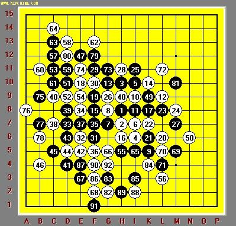

殷立诚点评2006世锦赛首轮战况
#1 殷立诚点评2006世锦赛首轮战况 作者：有志青年 发表时间：2006-5-1 13:34:23
#2 我国五子棋资深教练高玉民五段点评Hannes Hermanssons 对吴昊的对局 作者：有志青年 发表时间：2006-5-1 13:56:44
攻守交换抢好点，考验谁先出错
棋谱见一楼互动谱中，或见下图

Hannes执黑的开的是瑞星局。由于瑞星局局面比较平衡，是高段棋手常走的开局之一，黑白攻防变化相当复杂，如果双方不出现失误或者创新着法，应该是和局的局面。从这盘的结果看是黑棋的失误，导致了白方的胜利。黑前15步棋都是瑞星最常见的定式走法，白16、18、22是好棋，利用进攻防守，削弱了黑棋的优势，黑23开始开始反夺先手进攻，黑25、27继续进攻，白28是唯一的防守，否则黑速胜。黑29继续进攻，黑31做棋，
白32有多点选择，但这一点是强防，黑33继续做棋，一子通二路，白34强防，黑35至53手一路连续强攻，没有取胜，55手不得不回过头来防守，白56看黑棋没棋，大胆做一手棋，黑棋不甘心觉得自己下方有棋，又走了57、59、61、63连续进攻，但白棋精确妙算，58、60、62、64防守应对无误，使黑棋没有机会胜，迫使黑65、67转攻为守，白72看黑棋没棋，自己又做了一手棋，黑73、75、77、79利用进攻防守，抢占好点，避免白棋以后利用，黑81怕白棋占此点，所以补了一手，白82转守为攻，黑棋由于进攻太凶，考虑太多，导致后面89步棋的失误，让白棋90步棋后，VCF抓黑棋四四禁手取胜。
五子棋小知识：
做棋：五子棋在进攻当中离不开连、等、跳。而等着，也就是做棋，是众多连珠高手在进攻当中，采用较多的一种隐蔽性进攻技术，它看似不露锋芒，但却往往是蓄积力量的要着，是连珠棋手在开局和中局中几乎必不可少的制胜手段。